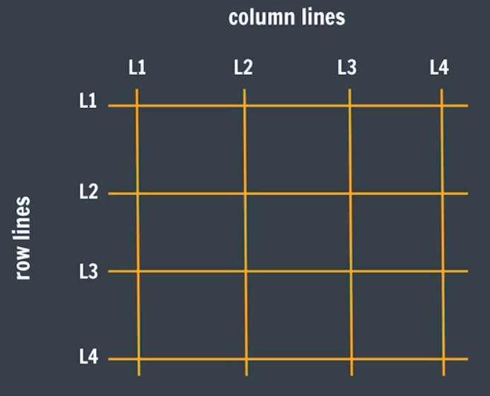

What is CSS Grid?
♠ CSS Grid is a layout system that allows you to create complex web layouts easily. Imagine a grid as a table with rows and columns. With CSS Grid, you can place elements into these rows and columns, making it easy to organize content on a webpage.
♠ Setting a container's display to grid will make all children grid items
Display: grid;
}
Grid elements
Grid Container
The element that uses display: grid;. It holds all the grid items.
Grid Items
The direct children of the grid container. They are placed into the grid cells.
Grid Lines
The lines that divide the grid into rows and columns.
Grid Model
The grid model in CSS is like a blueprint or a plan for how to arrange items on a webpage. It defines a structured layout where you can place your content in rows and columns, similar to how you might organize items on a shelf or a spreadsheet.
-
Grid Lines
The invisible lines that divide the grid into different sections. These lines help you position and size your grid items.
-
Grid Tracks
The rows and columns themselves. Think of them as the spaces between grid lines where content can go.
-
Grid Cells
The individual squares or rectangles formed by the intersections of rows and columns. Each cell can hold a grid item.
Grid Rowns Gap
The spaces between each column/row are called gaps.
Display: grid;
column-gap: 50px;
}
Grid Template
They define the lines & track sizing
-
grid-template-rows
specifies the number (and the heights) of the rows in a grid layout.
container {Other Examples :-
display: grid;
grid-template-rows: 100px 200px auto;
}Explaination:
This creates a grid with three rows:- The first row is 100 pixels tall.
- The second row is 200 pixels tall.
- The third row is automatically sized to fit its content.
container {
grid-template-rows: auto auto;
grid-template-rows: 50px 100px;
grid-template-rows: 20% 20%;
grid-template-rows: 70px auto;
} -
grid-template-columns
specifies the number (and the widths) of columns in a grid layout.
container {Other Examples :-
display: grid;
grid-template-columns: 1fr 2fr 1fr;
}Explaination:
This creates a grid with three columns:- The first column takes up 1 fraction of the available space.
- The second column takes up 2 fractions of the available space.
- The third column takes up 1 fraction of the available space.
container {
grid-template-columns: auto auto auto;
grid-template-columns: 50px 100px;
grid-template-columns: 10% 10% 10%;
grid-template-columns: 70px auto;
}
Grid template Units :-
| Unit | Details |
|---|---|
| none | Default value. Columns/Rows are created if needed |
| auto | The size of the Columns/Rows is determined by the size of the container and on the size of the content of the items in the Columns/Rows |
| max-content | Sets the size of each Columns/Rows to depend on the largest item in the Columns/Rows |
| min-content | Sets the size of each Columns/Rows to depend on the smallest item in the Columns/Rows |
| fr | stands for "fraction of the available space." It's used to divide space in the grid container among columns or rows. |
Grid Template Repeat
Repeat is used to divide all available space
grid-template-rows: repeat(count, 1fr);
Explaination:
grid-template-rows: repeat(count, 1fr);⋄ This creates a grid with follwing parameters:
- The "Count" will make the no. of rows mentioned in its value
- Here 1fr means 1 fraction of 100% width.
grid-template-rows: repeat(2, 1fr);
Then It will create two rows of 1fr cell-track(Width).
grid-template-rows: 1fr 1fr;
<!-- For Columns -->
grid-template-columns: repeat(count, 1fr);
grid-template-columns: repeat(2, 1fr)
grid-template-columns: 1fr 1fr;
Grid Gaps
They define the gaps between the lines.
column-gap: 10px;
grid-gap: row-gap column-gap;
// grid-gap: 10px 10px;
Grid Columns
Defines an item's starting & ending position inside the column.
This is implemented in the child element.
grid-column-start: line_number;
grid-column-end: line_number;
grid-column: start_column / end_column;
grid-column: start_column / span number;
Explaination of span
Span means how many grid cell will be consumed by the item after starting column.e.g. : If its value is grid-column: 2 / span 5;
Then item will take column 2 to 7, It means "2 (starting column) + "3, 4, 5, 6, 7 (next 5 cells)".
}
grid-column-start: 1;
grid-column-end: 3;
OR
grid-column: 1 / 3;
OR
grid-column: 1 / span 2;
}
Explaination :-
in above Example the perticular grid item will take widht from column-1 to column-3.Grid Rows
Defines an item's starting & ending position inside the row.
This is implemented in the child element.
grid-row-start: line_number;
grid-row-end: line_number;
grid-row: start_row / end_row;
grid-row: start_row / span number;
Explaination of span
Span means how many grid cell will be consumed by the item after starting row.e.g. : If its value is grid-row: 2 / span 5;
Then item will take row 2 to 7, It means "2 (starting row) + "3, 4, 5, 6, 7 (next 5 cells)".
}
grid-row-start: 1;
grid-row-end: 3;
OR
grid-row: 1 / 3;
OR
grid-row: 1 / span 2;
}
Explaination :-
in above Example the perticular grid item will take widht from row-1 to row-3.CSS Grid Common Properties
-
Horizontal Alignment
-
justify-items
Used for Grid-Container.
container {
justify-items: value;
} -
justify-self
Used for Grid-Items.
Grid_Item {
justify-self: value;
}
-
justify-items
-
Vertical Alignment
-
align-items
Used for Grid-Container.
container {
align-items: value;
} -
align-self
Used for Grid-Items.
Grid_Item {
align-self: value;
}
-
align-items
-
Combined Alignment
-
place-items
UA shorthand property that combines align-items and justify-items, allowing you to set both horizontal and vertical alignment for all grid items at once.
container {
place-items: vertical horizontal;
place-items: center start;
} -
place-self
A shorthand property that combines align-self and justify-self, allowing you to set both horizontal and vertical alignment for a specific grid item at once.
Grid_Item {
place-self: vertical horizontal;
place-self: end stretch;
}
-
place-items
Value table for aligning properties
| Values | Description |
| start | Aligns items to the start of the grid area (left for horizontal, top for vertical). |
| end | Aligns items to the end of the grid area (right for horizontal, bottom for vertical). |
| center | Centers items in the grid area. |
| stretch | Stretches items to fill the entire grid area (default for justify-items and align-items). |
| baseline | Aligns items based on their baseline (used mostly with text). |
| left | Aligns items to the left of the grid area (used only with justify-items and justify-self). |
| right | Aligns items to the right of the grid area (used only with justify-items and justify-self). |
Note
display: grid; and display: flex; are "Block" element.
If We want to make them inline element the we have to use :- display: inline-grid; and display: inline-flex;.